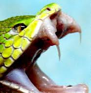
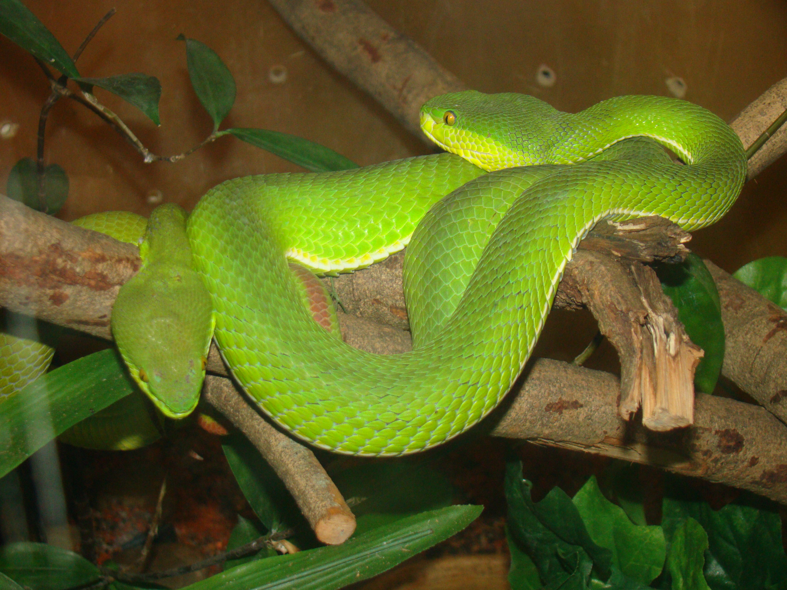

.jpg)
งูเขียวหางไหม้ท้องเหลือง (White-lipped Pit Viper/Green Viper)
ชื่อวิทยาศาสตร์: Trimeresurus albolabris
ลักษณะทั่วไป
งูเขียวหางไหม้ท้องเหลืองจัดเป็นงูพิษขนาดเล็ก โดยทั่วไปมีความยาวเฉลี่ยตั้งแต่หัวถึงปลายหางอยู่ที่ประมาณ 60 ถึง 80 เซนติเมตร ในตัวเมียที่มีขนาดใหญ่เต็มที่และอยู่ในสภาพแวดล้อมที่สมบูรณ์ อาจเติบโตได้ยาวถึง 90 ถึง 104 เซนติเมตร ในขณะที่ตัวผู้จะมีขนาดเล็กกว่าอย่างเห็นได้ชัด โดยมีความยาวเฉลี่ยอยู่ที่ประมาณ 50 ถึง 65 เซนติเมตร ลำตัวมีลักษณะค่อนข้างหนาแน่น แข็งแรง และทรงกระบอกที่แบนข้างเล็กน้อย (Slightly laterally compressed) เพื่อช่วยในการพยุงตัวและกระจายน้ำหนักขณะเลื้อยไต่ไปตามกิ่งไม้เล็กๆ เกล็ดด้านบนลำตัว (Dorsal side) เป็นสีเขียวใบไม้สด สีเขียวตองอ่อน หรือสีเขียวเข้มสม่ำเสมอทั่วทั้งหลัง ไม่มีลวดลายจุดหรือลายพาดใดๆ บนแผ่นหลัง ด้านใต้ท้องมีสีเหลืองสด สีเหลืองอมเขียว หรือสีครีมสว่าง ซึ่งเป็นที่มาของชื่อ "ท้องเหลือง" โดยแผ่นเกล็ดใต้ท้อง (Ventral scales) มีลักษณะกว้าง เรียบ และแข็งแรง ช่วยในการยึดเกาะพื้นผิว มีเส้นแถบสีขาวเรียบหรือสีเหลืองอ่อนลากยาวเป็นแนวตรงอยู่บริเวณเกล็ดแถบนอกสุดข้างลำตัว ตั้งแต่บริเวณหลังคอยาวไปจนสุดโคนหาง เส้นนี้จะปรากฏชัดเจนมากใน งูตัวผู้ ขณะที่ งูตัวเมีย มักจะไม่มีเส้นนี้ หรือหากมีก็จะเป็นเส้นที่ไม่สมบูรณ์ ขาดตอน หรือกลมกลืนไปกับสีท้อง เกล็ดลำตัวด้านบนมีลักษณะเป็นสันเล็กๆ (Keeled scales) ตรงกลางเกล็ด ซึ่งช่วยลดการสะท้อนของแสง ทำให้ตัวงูกลมกลืนไปกับพุ่มไม้ และเพิ่มแรงเสียดทานในการเลื้อยขึ้นที่สูง ปลายหางตั้งแต่ช่วงโคนหางตอนปลายไปจนถึงสุดปลายหาง จะเปลี่ยนสีจากสีเขียวเป็นสีแดงอิฐ สีน้ำตาลแดง หรือสีส้มอมน้ำตาลอย่างเด่นชัด ซึ่งเป็นที่มาของคำว่า "หางไหม้" โดยพฤติกรรมธรรมชาติ งูจะใช้ปลายหางสีแดงนี้ค่อยๆ กระตุกหรือโบกไปมาเพื่อเลียนแบบการเคลื่อนไหวของหนอนหรือแมลง สำหรับล่อให้จิ้งจก กบ หรือนก เข้ามาใกล้ในระยะโจมตี หางมีขนาดค่อนข้างสั้นเมื่อเทียบกับความยาวลำตัวทั้งหมด แต่มีความแข็งแรงและเป็นหางประเภทจับยึดได้ (Prehensile tail) สามารถม้วนพัน ขดรัด และยึดเกาะกิ่งไม้ได้อย่างเหนียวแน่นเพื่อพยุงร่างกายส่วนที่เหลือให้ยื่นออกไปจับเหยื่อในอากาศ โครงสร้างหัวมีลักษณะเป็นรูปทรงสามเหลี่ยมยอดแหลมอย่างเห็นได้ชัดเจน ขอบหัวด้านหลังขยายกว้างออกอย่างเด่นชัดเนื่องจากเป็นที่อยู่ของต่อมพิษ (Venom glands) ขนาดใหญ่สองข้างบริเวณขมับ ตัวหัวมีความกว้างกว่าส่วนคออย่างเห็นได้ชัด ทำให้มองเห็นรอยคอดระหว่างหัวกับลำตัว (Distinct neck) อย่างเด่นชัด เกล็ดบริเวณริมฝีปากบนและริมฝีปากล่าง รวมถึงพื้นที่ใต้คาง มีสีขาวเนียน เรียบ หรือสีครีมสว่าง ซึ่งเป็นจุดสังเกตเฉพาะตัวที่สำคัญมาก รอยต่อระหว่างสีเขียวสดด้านบนหัวกับสีขาวบริเวณริมฝีปากล่างถูกตัดกันอย่างคมชัด ดวงตามีขนาดปานกลางถึงใหญ่ ม่านตา (Iris) มีสีเหลืองทอง สีเหลืองนวล หรือสีเขียวอมเหลืองเรืองแสง รูเรตินาหรือรูรูม่านตา (Pupil) เป็นแนวตั้งในแนวดิ่ง (Vertical slit) เหมือนตาแมว ซึ่งเป็นคุณลักษณะของงูที่ออกหากินในเวลากลางคืน ช่วยในการขยายรับแสงและกะระยะทางในความมืดได้อย่างแม่นยำ มีร่องหรือรูสัมผัสความร้อนรังสีอินฟราเรด (Loreal pit) ขนาดใหญ่และลึก ปรากฏอยู่ทั้งสองข้างของใบหน้า ตำแหน่งอยู่ระหว่างรูจมูกกับดวงตา อวัยวะนี้ช่วยให้งูรับรู้ถึงความเปลี่ยนแปลงของอุณหภูมิรอบข้างและตรวจจับความร้อนจากร่างกายของสัตว์เลือดอุ่น เช่น หนู หรือนก ได้แม้ในมืดสนิท งูเขียวหางไหม้ท้องเหลืองเป็นสัตว์กินเนื้อ (Carnivore) ที่กินสัตว์ขนาดเล็กหลากหลายชนิด โดยชนิดของอาหารจะปรับเปลี่ยนไปตามช่วงวัยและขนาดของตัวงู โดยตัวเต็มวัยล่าสัตว์เลือดอุ่นเป็นหลัก เช่น หนูชนิดต่างๆ นกขนาดเล็ก รวมถึงสัตว์เลื้อยคลานและสัตว์ครึ่งบกครึ่งน้ำ เช่น จิ้งจก กิ้งก่า กบ และเขียด ส่วนงูวัยอ่อนจะล่าสัตว์ตัวเล็ก เช่น เขียดขนาดเล็ก จิ้งจก หรือแมลงบางชนิด เป็นนักซุ่มโจมตีที่อดทนสูง มักเกาะนิ่งบนกิ่งไม้หรือพุ่มไม้เพื่อรอให้เหยื่อเดินผ่าน เมื่อเหยื่อเข้ามาในระยะ งูจะฉกฉีดพิษอย่างรวดเร็ว สำหรับเหยื่อขนาดเล็กบนต้นไม้อย่างนกหรืองูด้วยกัน งูอาจกัดค้างไว้เพื่อไม่ให้เหยื่อตกพื้น ส่วนเหยื่อขนาดใหญ่บนพื้นอาจปล่อยให้วิ่งไปตายก่อนตามรอยกลิ่นไปกิน
ถิ่นอาศัย พิษ และความอันตราย
- ถิ่นอาศัย: งูเขียวหางไหม้ท้องเหลืองเป็นงูเขียวหางไหม้ชนิดที่มีการกระจายพันธุ์กว้างขวางและพบได้บ่อยที่สุดชนิดหนึ่ง ทั้งในประเทศไทยและในภูมิภาคเอเชียใต้ถึงเอเชียตะวันออกเฉียงใต้ ได้แก่ อินเดีย (ทางตอนเหนือและตะวันออกเฉียงเหนือ), เนปาล, บังกลาเทศ, เมียนมา, ไทย, ลาว, กัมพูชา, เวียดนาม, ตอนใต้ของจีน (รวมถึงเกาะไหหลำและฮ่องกง) และอินโดนีเซีย (เช่น เกาะสุมาตรา ชวา และหมู่เกาะซุนดาน้อย) ในประเทศไทยพบได้ทั่วทุกภาคของประเทศตั้งแต่ภาคเหนือ ภาคตะวันออกเฉียงเหนือ ภาคกลาง ภาคตะวันออก ไปจนถึงภาคใต้ พบชุกชุมเป็นพิเศษในพื้นที่ราบลุ่มภาคกลาง และภาคตะวันออก รวมถึงเขตเมืองและชุมชนที่มีต้นไม้หรือสวนป่า งูเขียวหางไหม้ท้องเหลืองมีความสามารถในการปรับตัวเข้ากับสภาพแวดล้อมทางธรรมชาติได้หลากหลายแบบ ตั้งแต่ระดับความสูงปานกลางไปจนถึงพื้นที่ราบลุ่ม พบในป่าโปร่ง ป่าเบญจพรรณ ป่าละเมาะ ป่าชายเลน และชายป่าดิบชื้นในพื้นที่ระดับต่ำไปจนถึงระดับความสูงประมาณ 1,000–1,200 เมตรเหนือระดับน้ำทะเล (มักไม่ค่อยพบในพื้นที่ภูเขาสูงมาก) ส่วนใหญ่อาศัยอยู่ตามพุ่มไม้ กิ่งไม้ขนาดเล็กถึงขนาดกลาง กอไผ่ หรือต้นไม้ที่มีใบหนาทึบ สูงจากพื้นดินประมาณ 0.5 ถึง 2–3 เมตร เพื่อใช้หลบสายตาศัตรูและซุ่มรอเหยื่อ จุดเด่นของงูชนิดนี้คือเป็นงูที่ ปรับตัวเข้ากับกิจกรรมของมนุษย์ได้ดีมาก (Synanthropic species) จึงพบได้บ่อยในบริเวณใกล้เคียงกับที่อยู่อาศัยของคน ไม่ว่าจะเป็นพื้นที่เกษตรกรรมอย่างสวนผลไม้ สวนยางพารา ไร่นา และสวนรดน้ำ ซึ่งเป็นแหล่งที่อุดมไปด้วยอาหารอย่างกบ เขียด และหนู หรือเขตชุมชนและเมืองใหญ่อย่างสวนสาธารณะ สวนหลังบ้าน พุ่มไม้ตกแต่งตามบ้านเรือน กองไม้ กองอิฐ หรือแม้กระทั่งตามกระถางต้นไม้ใกล้ตัวบ้าน
- พิษ:พิษประกอบด้วยเอนไซม์กลุ่ม Thrombin-like enzymes และ Metalloproteinases ที่เข้าไปเร่งการสลายไฟบริโนเจน (Fibrinogen) ในกระแสเลือด ทำให้โปรตีนที่ช่วยให้เลือดแข็งตัวถูกใช้หมดไปในเวลาอันรวดเร็ว ส่งผลให้เกล็ดเลือดต่ำและ เลือดไม่แข็งตัว (Coagulopathy) พิษจะกัดกร่อนผนังหลอดเลือดฝอย ทำให้เกิดการรั่วซึมของเลือดเข้าสู่ชั้นใต้ผิวหนัง เกิดบาดแผลบวมและมีเลือดออกภายใน ทันทีที่ถูกกัดผู้ป่วยจะรู้สึกปวดปวดรุนแรงและแสบร้อนบริเวณรอยเขี้ยว อวัยวะที่ถูกกัดจะเริ่มบวมแดงอย่างรวดเร็วภายใน 15–30 นาที และอาการบวมจะขยายพื้นที่ลุกลามขึ้นเรื่อยๆ (เช่น กัดที่นิ้ว อาการบวมอาจลามไปถึงหลังมือ แขน หรือไหล่ได้ภายในไม่กี่ชั่วโมง) บริเวณรอบรอยกัดอาจเกิดเป็นตุ่มพองใสหรือตุ่มพองบรรจุเลือด ผิวหนังบริเวณบาดแผลจะเปลี่ยนเป็นสีเขียวคล้ำหรือสีน้ำเงินเนื่องจากมีเลือดออกใต้ผิวหนัง หากได้รับพิษปริมาณมากอาจเกิดภาวะเนื้อตายบริเวณรอยกัด โดยปกติพิษจะไม่ถึงตายสำหรับผู้ใหญ่ที่ร่างกายแข็งแรง แต่ถ้าไม่ใช่ ก็จะเป็นหนังคนละม้วนทันที เพราะอาจมีอาการเพิ่มเติม เช่น มีเลือดไหลซึมจากรอยเขี้ยวตลอดเวลาไม่ยอมหยุด มีเลือดออกตามไรฟัน เลือดกำเดาไหล หรือเลือดออกในตาขาว เกิดรอยช้ำหรือจุดเลือดออกเล็กๆ (Petechiae) บนผิวหนังส่วนอื่นของร่างกาย ปัสสาวะมีสีแดงอมน้ำตาล (ปัสสาวะเป็นเลือด) ถ่ายอุจจาระเป็นสีดำ หรืออาเจียนเป็นเลือด ในกรณีรุนแรง การสูญเสียเลือดหรือภาวะตอบสนองต่อพิษอาจทำให้เวียนศีรษะ เหงื่อออก หน้ามืด ความดันโลหิตลดต่ำลง และหมดสติ ถ้าไม่ได้รับการรักษาทันเวลาก็อาจตายได้ แม้พิษงูเขียวหางไหม้จะมีอัตราการเสียชีวิตต่ำ แต่หากปล่อยให้อาการบวมลุกลามโดยไม่ได้รับเซรุ่มแก้พิษ อาจทำให้เกิดภาวะแรงดันในช่องกล้ามเนื้อสูง (Compartment Syndrome) จนต้องผ่าตัด หรือเกิดการติดเชื้อแทรกซ้อนจนสูญเสียอวัยวะได้
- ระดับความอันตราย: ต้องระวังเป็นพิเศษ ☠☠☠(งูที่กัดคนบ่อยที่สุดในประเทศ): เป็นงูเขียวหางไหม้ชนิดที่ พบได้บ่อยที่สุดในประเทศไทย มีความสามารถในการปรับตัวเข้ากับสภาพแวดล้อมที่มนุษย์อยู่อาศัยได้ดีมาก ไม่จำกัดแค่ในป่า แต่พบได้ตามสวนสาธารณะ พุ่มไม้ข้างบ้าน สวนหลังบ้าน หรือกระถางต้นไม้ในเขตเมืองใหญ่ ทำให้มีโอกาสที่คนจะเดินไปใกล้หรือสัมผัสโดยไม่ตั้งใจสูงมาก เป็นงูที่ก้าวร้าวและฉกไว หากรู้สึกถูกคุกคามจะขดตัวเตรียมฉกทันทีโดยไม่มีสัญญาณเตือนล่วงหน้า ประกอบกับสีลำตัวที่เขียวกลมกลืนกับใบไม้ ทำให้อำพรางตัวได้เนียนมาก คนส่วนใหญ่ที่โดนกัดไม่ได้เกิดจากการเข้าไปหาเรื่อง แต่เกิดจากการเดินไปชน จับกิ่งไม้ หรือตัดแต่งพุ่มไม้แล้วไปโดนตัวงูโดยไม่ทันมอง แต่แม้จะเป็นพิษต่อระบบเลือด (Hematotoxin) ที่ทำให้เกิดอาการปวดอย่างรุนแรง บวมฉะอักเสบ แผลเขียวช้ำ และเลือดไหลไม่หยุด แต่ปริมาณพิษและความเข้มข้นไม่ได้สูงถึงขั้นเป็นอันตรายถึงชีวิตโดยทันที (มีอัตราการเสียชีวิตต่ำมากเมื่อเทียบกับงูแมวเซา งูกะปะ หรืองูเห่า) และประเทศไทยมีเซรุ่มต้านพิษงูเขียวหางไหม้พร้อมรักษาในโรงพยาบาลเกือบทุกแห่ง
Fun Fact
- หางสีแดงมีไว้ใช้หาใช่โชว์: ปลายหางสีแดงอิฐที่ดูเหมือนแห้งเหี่ยวไม่ได้มีไว้ประดับ แต่ถูกใช้เป็นเหยื่อล่อชั้นดี (Caudal Luring) โดยเฉพาะในงูวัยอ่อน งูจะขดตัวพรางไปกับใบไม้ แล้วชูปลายหางสีแดงขยับโบกไปมาเลียนแบบการเคลื่อนที่ของหนอนหรือแมลง เพื่อหลอกให้จิ้งจก กิ้งก่า หรือกบ เลื้อยเข้ามาหาเพราะคิดว่าเป็นอาหาร ก่อนจะฉกจู่โจมในเสี้ยววินาที
- ไม่ได้วางไข่ แต่ออกลูกเป็นตัว!: งูส่วนใหญ่จะวางไข่ไว้ตามพงหญ้า แต่งูเขียวหางไหม้ท้องเหลืองจัดอยู่ในกลุ่มที่ฟักไข่ในท้องแล้วออกลูกเป็นตัว (Ovoviviparous) โดยแม่งูจะตั้งท้องนานหลายเดือนและคลอดลูกงูตัวน้อยๆ ออกมาทีละ 10–25 ตัว ซึ่งลูกงูที่เพิ่งเกิดมาจะมีพิษครบถ้วนพร้อมใช้งานและดูแลตัวเองได้ทันทีตั้งแต่วินาทีแรกที่ออกจากท้องแม่
- แยกเพศง่ายๆ แค่ดูที่ "เส้นข้างลำตัว": เราสามารถระบุเพศของงูชนิดนี้ได้ด้วยตาเปล่าอย่างง่ายดาย โดยงูตัวผู้จะมีเส้นแถบสีขาวหรือสีเหลืองอ่อนลากยาวเป็นแนวตรงอย่างชัดเจนบริเวณข้างลำตัวตั้งแต่คอจนถึงโคนหาง ในขณะที่งูตัวเมียมักจะไม่มีเส้นนี้ (ลำตัวเป็นสีเขียวล้วน) หรือหากมีก็จะเป็นเส้นที่จางและขาดตอนมาก